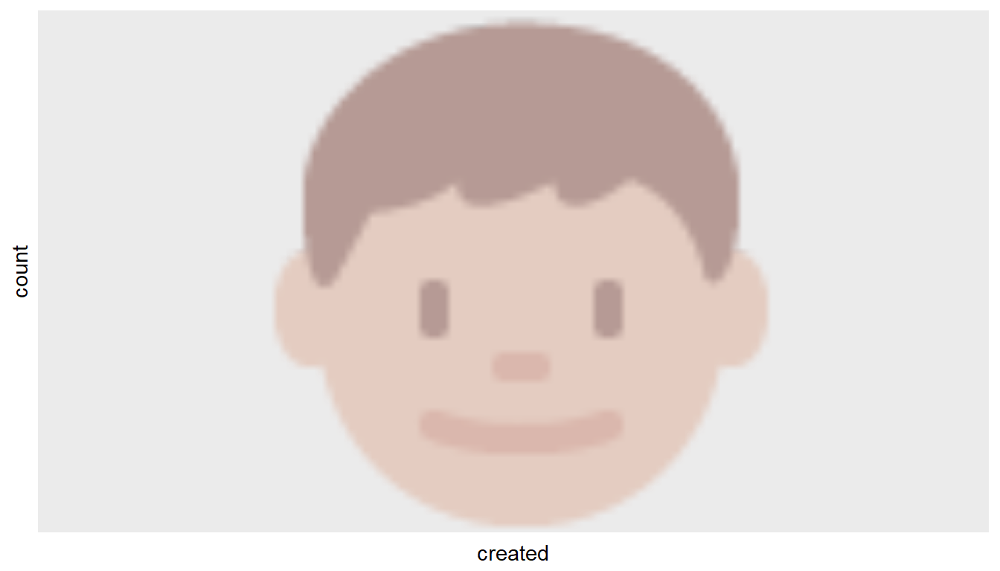
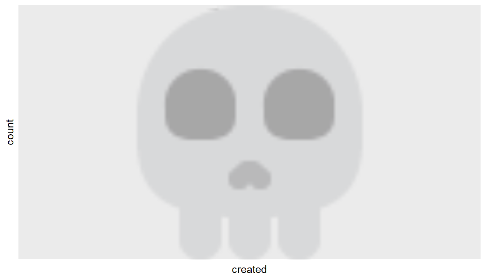
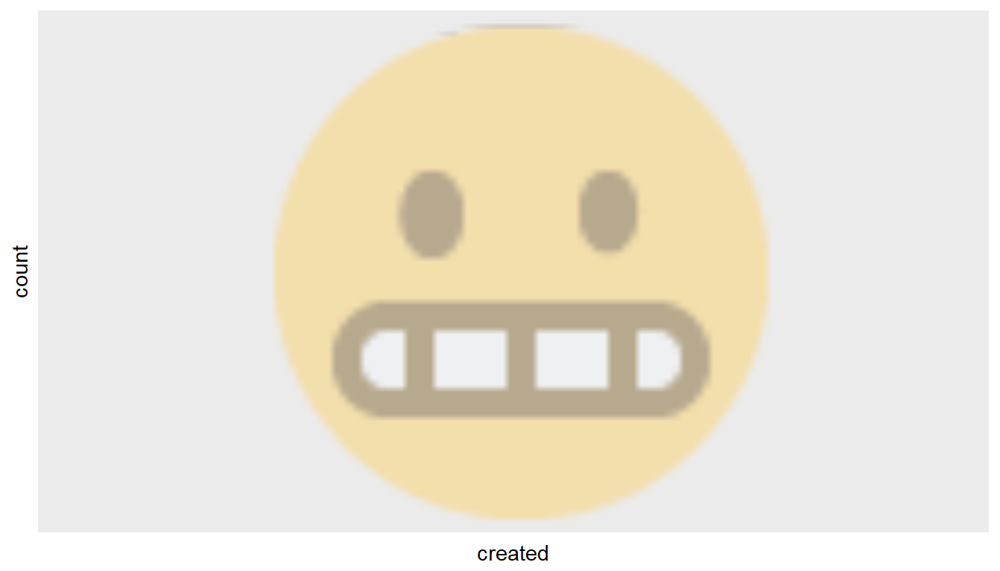

Analyzing Emojis in YouTube Comments
Depending on the video(s) you are exploring, it might be useful to account for and analyze the use of emojis in comments. As emojis become more and more popular and more complex in the meanings they are able to signify, the more important it is to at least account for emojis and include them in textual analyses. Here’s how you can do this with YouTube data!
Getting YouTube Data
I wanted to choose something that had both 1) a lot of comments and 2) a strong likelihood of comments containing emojis, so let’s look at the comments from the ill-advised (and ill-fated) ‘Emoji Movie’ trailer. This also has a lot of varying sentiment (one of the comments is “The movie is a such disgrace to the animation film industry.”😹😹😹).
If you don’t have the YouTube API set up, please see instructions on how to do so here.
# Connect to YouTube API
# Leave token blank
# yt_oauth("app_id", "app_password", token='')
# Get comments. 'max_results = 101' ensures I get all of the comments on the video.
emojimovie <- get_comment_threads(c(video_id="o_nfdzMhmrA"), max_results = 101)
# Save data (if you want)
# write_csv(emojimovie, path = "sampletubedata.csv")Now we have some (~10,300) comments to play with – let’s identify the emojis in our data. To do so, we’ll use the FindReplace function from the DataCombine package and an emoji dictionary I put together that has each emoji’s prose name, UTF-8 encoding and R encoding (the R encoding is specifically for emojis in Twitter data). There are a couple of steps to change the dictionary to be able to identify emojis in our YouTube data, but depending on your computer you might be able to just search by UTF-8 encoding.
Help figuring out the emoji encoding issue from Patrick Perry – thanks Patrick! 😊
emojis <- read_csv("https://raw.githubusercontent.com/lyons7/emojidictionary/master/emoji_dictionary.csv")
# Specific to YouTube data
emojis <- emojis[!emojis$Name == " SHRUGFACE ",]
# change U+1F469 U+200D U+1F467 to \U1F469\U200D\U1F467
emojis$escapes <- gsub("[[:space:]]*\\U\\+", "\\\\U", emojis$Codepoint)
# convert to UTF-8 using the R parser
emojis$codes <- sapply(parse(text = paste0("'", emojis$escapes, "'"),
keep.source = FALSE), eval)Now we’ll use the FindReplace function to go through and identify emojis.
emojimovie <- read_csv("https://github.com/soodoku/tuber/blob/master/data-raw/sampletubedata.csv?raw=TRUE")
emojimovie <- as.data.frame(emojimovie)
# First have to change class of comment text to character from factor
emojimovie$text <- as.character(emojimovie$textOriginal)
# Go through and identify emojis
emoemo <- FindReplace(data = emojimovie, Var = "text",
replaceData = emojis,
from = "codes", to = "Name",
exact = FALSE)
# This might take some time, we have a big data set. Now you have your comments with emojis identified. Let’s look at the top emojis in our data set.
# Have to do keep the "to_lower" parameter FALSE so our emojis in our dictionary are kept separate from words that happen to be the same as emoji names
# First want an id for each comment -- this will come in handy later on
emoemo$comment_id <- 1:nrow(emoemo)
emotidy_tube <- emoemo %>%
unnest_tokens(word, text, to_lower = FALSE)
# Put emojis in tidy format too so as to use a join function
emojis$Name <- as.character(emojis$Name)
tube_tidy_emojis <- emojis %>%
unnest_tokens(word, Name, to_lower = FALSE)
# Now we will use inner_join to keep matches and get rid of non-matches
tube_emojis_total <- tube_tidy_emojis %>%
inner_join(emotidy_tube)
# What is the most frequent emoji?
tube_freqe <- tube_emojis_total %>%
count(word, sort = TRUE)
tube_freqe[1:10,]## # A tibble: 10 x 2
## word n
## <chr> <int>
## 1 TAGLATINSMALLLETTERA 1955
## 2 TAGDIGITTWO 345
## 3 RAISEDHAND 230
## 4 TAGDIGITFOUR 230
## 5 TAGLATINSMALLLETTERI 230
## 6 AIRPLANE 115
## 7 ANCHOR 115
## 8 CHURCH 115
## 9 CROSSEDSWORDS 115
## 10 FOUNTAIN 115So, our ten most frequent emojis in the comments of the Emoji Movie trailer are 😂, 👦, 📱, 😘, 👨, ☠️, ⚛️, 👯, 😬 and 😙. Read into that what you will! 😂
What if we want to look at how the use of these emojis has changed over time? We can also look at WHEN the posts were generated. We can make a graph of comment frequency over time. Graphs constructed with help from here, here, here, here, here, here, here and here.
We will also use the anytime package to format the time in a usable way.
# Subset to just have posts that have our top ten emojis
top_ten <- subset(tube_emojis_total, word == "FACEWITHTEARSOFJOY" | word == "BOY"| word == "MOBILEPHONE" | word == "FACETHROWINGAKISS" | word == "MAN" | word == "SKULLANDCROSSBONES" | word == "ATOMSYMBOL" | word == "COLONEWOMANWITHBUNNYEARS"| word == "GRIMACINGFACE" | word == "KISSINGFACEWITHSMILINGEYES")
# Now use the 'anytime' package to convert to time format we can use
top_ten$created <- anytime(as.factor(top_ten$publishedAt))
Emoji <- top_ten$word
minutes <- 60
ggplot(top_ten, aes(created, color = Emoji)) +
geom_freqpoly(binwidth=10080*minutes)
We can look at these one by one too and use the emoGG package to use actual emojis to show which ones we are talking about.
# The code you use in emoGG is the same as UTF-8 but without "U+" etc, and all letters lowercase
tearsofjoy <- top_ten[top_ten$word == "FACEWITHTEARSOFJOY",]
ggplot(tearsofjoy, aes(created)) +
geom_freqpoly(binwidth=10080*minutes) + add_emoji(emoji="1f602")
boy <- top_ten[top_ten$word == "BOY",]
ggplot(boy, aes(created)) +
geom_freqpoly(binwidth=10080*minutes) + add_emoji(emoji="1f466")
# Sometimes emoGG doesn't have your emoji -- here we have to use skull, not skull and crossbones
skull <- top_ten[top_ten$word == "SKULLANDCROSSBONES",]
ggplot(skull, aes(created)) +
geom_freqpoly(binwidth=10080*minutes) + add_emoji(emoji="1f480")
grimace <- top_ten[top_ten$word == "GRIMACINGFACE",]
ggplot(grimace, aes(created)) +
geom_freqpoly(binwidth=10080*minutes) + add_emoji(emoji="1f62c")
# ad infinitum!